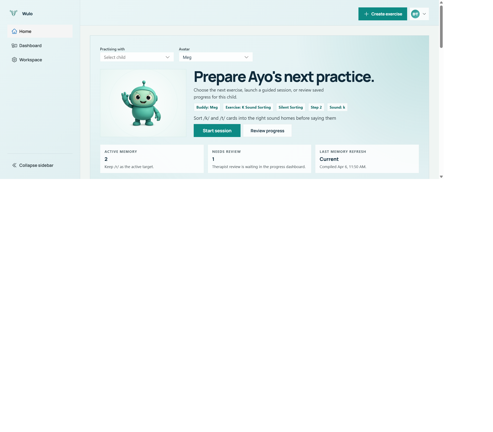
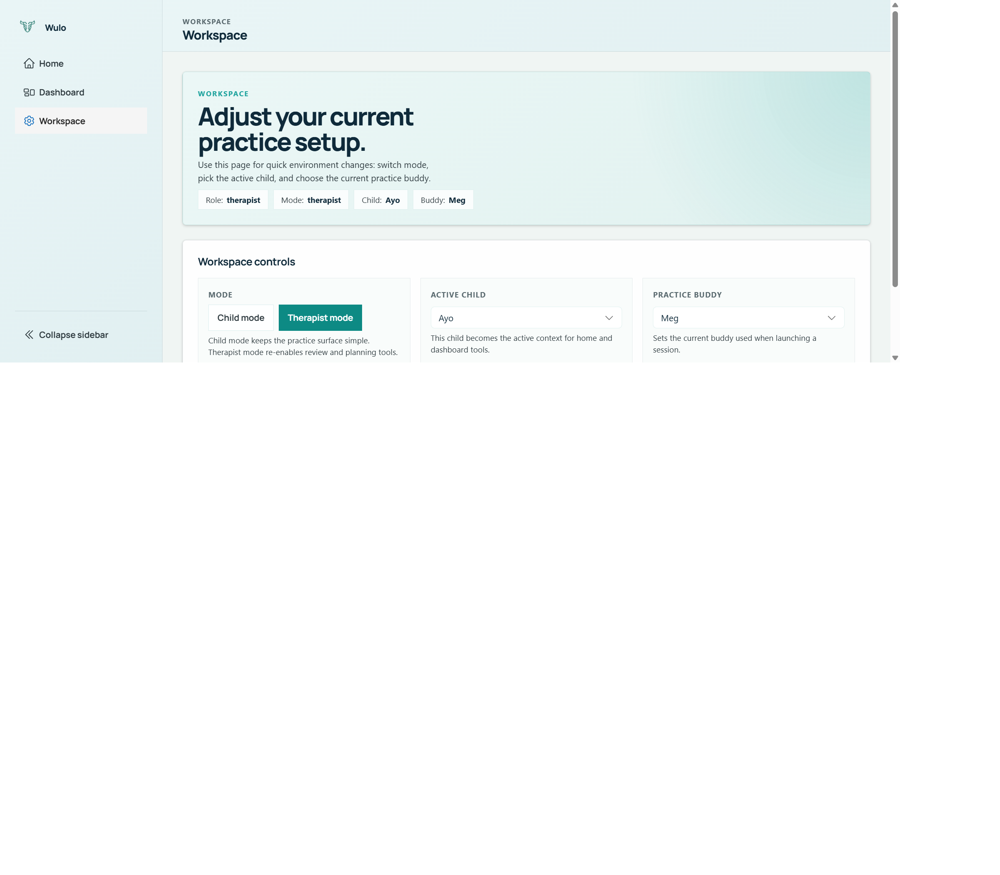
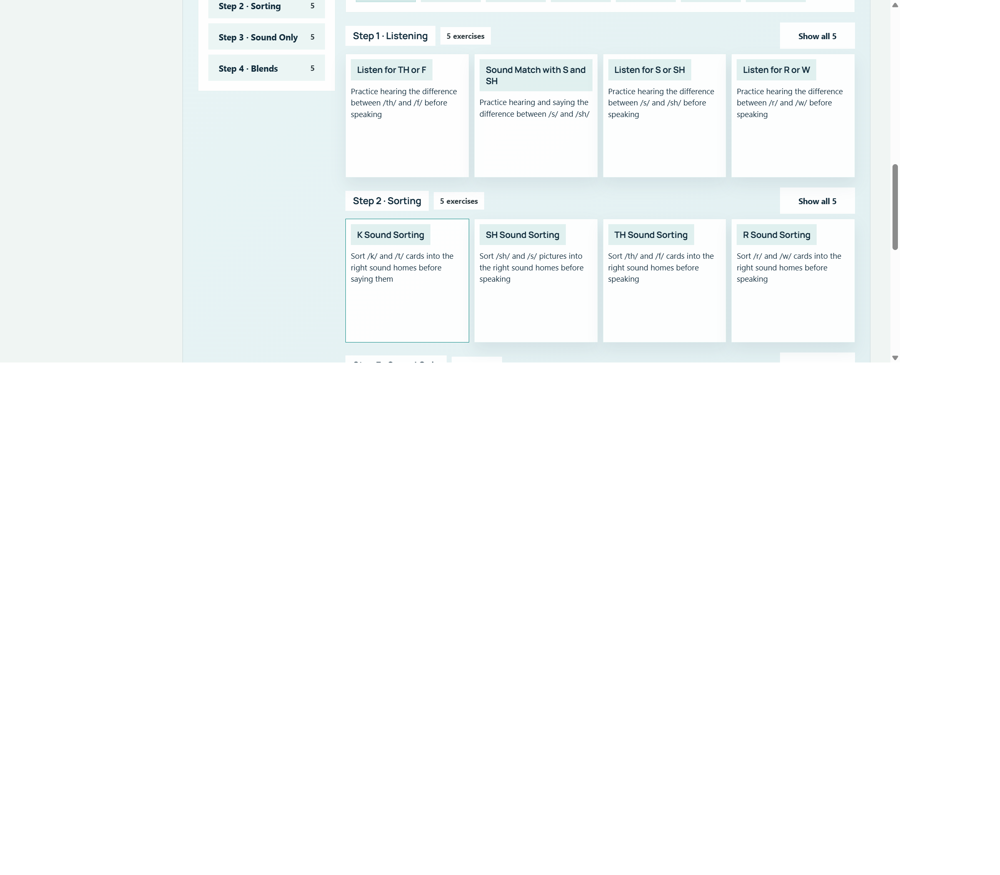
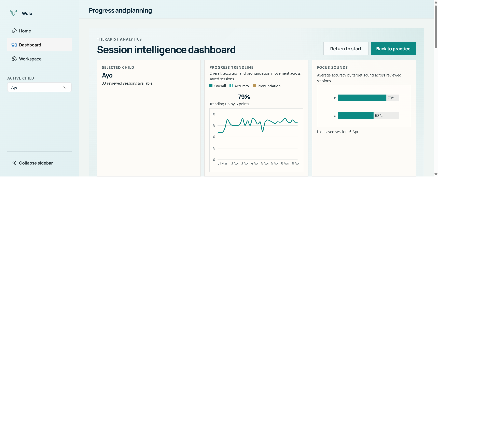
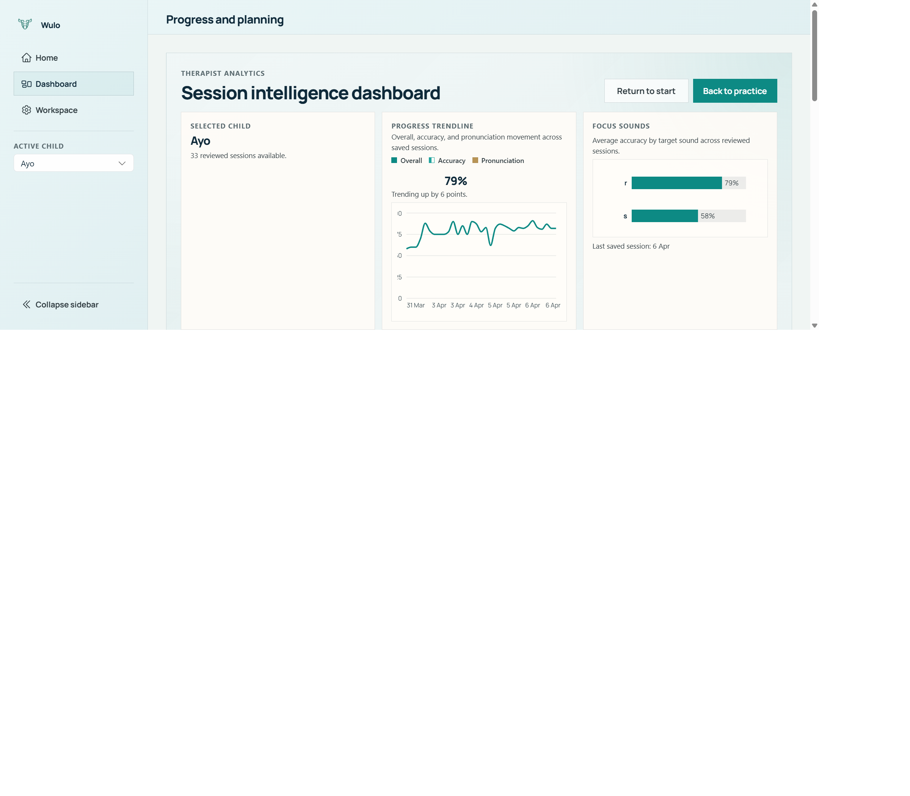
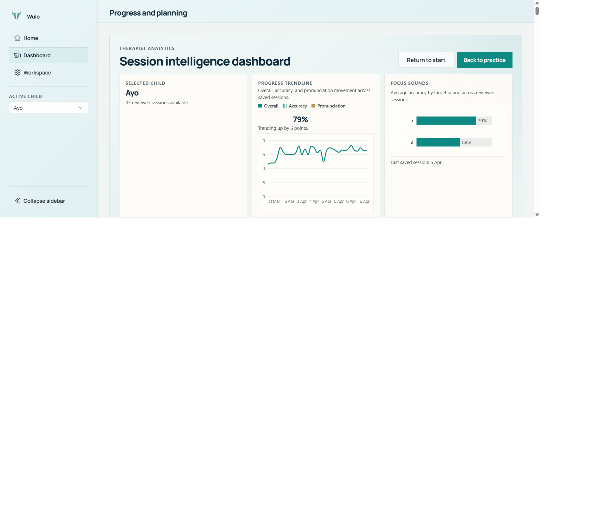
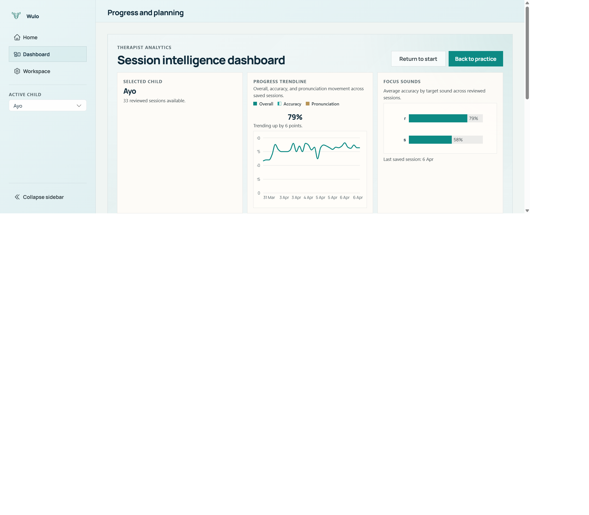
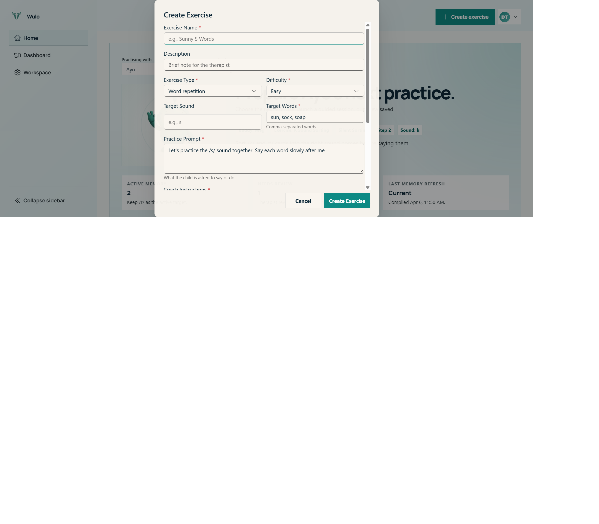

Version: 1.0 Last Updated: April 6, 2026 Platform: Web application (desktop and tablet supported)
Wulo is a therapist-supervised AI speech practice platform for structured articulation and phonological awareness work. It helps children practise with a voice buddy while keeping the therapist in control of review, interpretation, and next-step planning.
It is designed for therapists and clinical educators supporting children in clinics, schools, or supervised home practice.
At a high level, the workflow is:
The key principle is simple: Wulo is a practice and review tool, not a diagnostic tool. It can surface patterns, suggestions, and evidence, but it does not replace therapist judgement.
Note: Wulo supports supervised practice. It should be used alongside professional judgement, not instead of it.

Therapists can sign in with Microsoft or Google. On the sign-in screen, choose the provider you normally use for work. After sign-in, Wulo keeps your session active until it expires, so you do not need to sign in again each time you return during normal use.
If the session expires, Wulo returns you to the login screen and asks you to sign in again.
To sign in:
Continue with Microsoft or
Continue with Google.Tip: If your organisation uses more than one account, try to use the same sign-in provider each time so your normal therapist workspace opens consistently.

After sign-in, Wulo asks which workspace mode you want to use.
| Mode | Intended user | What is visible |
|---|---|---|
| Therapist mode | Therapist or supervisor | Therapist home, dashboard review workspace, planning, memory review, recommendations, workspace settings |
| Child mode | Child during a session | Simplified practice home and live session surfaces |
Therapists usually prepare the session in Therapist mode, then either switch to Child mode or hand the device over once the practice is ready to begin.
A short onboarding screen appears before first use in that browser. It reminds the therapist to confirm adult access, choose the child and exercise, and stay nearby during practice.
To choose a mode:
Therapist mode when you want review and planning
tools.Child mode when the child is ready to
practise.Before the first child session, Wulo asks the therapist to acknowledge supervised-practice consent.
This consent makes three things clear:
To acknowledge consent:
Acknowledge and continue.Note: Wulo does not currently use a therapist PIN flow. The implemented first-use steps are the onboarding screen plus supervised-practice consent acknowledgement.
The therapist-facing experience has three different surfaces. They work together, but each has a different job.
The therapist home screen is the launch and preparation surface. It is where you choose who is practising, which buddy the child will see, which exercise is active, and whether you want to start practice or move into review.
On the home screen you can see:
Start session action.Review progress action.The compact insight cards on the home surface are quick signals only. Full review happens in the dashboard workspace.
| Card | What it means | How to use it |
|---|---|---|
| Active memory | How many approved child-memory items currently exist, with a short leading example | Use this as a quick reminder of the child’s current working picture, not as a full case summary |
| Needs review | How many pending memory proposals are waiting for therapist review | If this number is above zero, consider checking the dashboard before relying on older recommendations |
| Last memory refresh | Whether approved memory has been compiled recently | This tells you whether therapist-reviewed memory is current enough to support planning |
| Top recommendation | The current top-ranked saved recommendation, if one exists | Use it as a prompt to review, not as an automatic instruction |
| Last recommendation run | When recommendations were last generated and how many options were ranked | Helps you judge how recent the suggestion is |
| Evidence status | Whether the saved recommendation evidence is current, stale, or not yet run | Review this before treating any recommendation as reliable for today’s session |
Tip: Think of the home cards as traffic lights. They tell you where to look next, but they are not the full clinical review.

The dashboard is the deep review workspace for one active child. This is where therapists inspect saved sessions, child memory, recommendations, and plans in one place.
The dashboard has four main tabs:
Session detailMemoryRecommendationsPlanIt also includes a child list, session history, summary cards at the top, and review charts that help you understand the child’s recent work over time.
Use the dashboard when you want to:
The Workspace page is the settings surface for everyday session setup. It is where you:
It also shows a simple summary of the current role, current mode, current child, and current buddy so you can confirm that the environment is set correctly.
The active child should stay aligned across Therapist home, Dashboard, and Workspace. If you change it in one place, your review context should follow that child.

Wulo uses an active-child model. This means the app is always working in the context of one selected child at a time.
When you change the active child, all of the following change with it:
You can switch the active child from therapist-facing surfaces such as the sidebar child list, the child dropdown, or the home screen child selector.
To change the active child safely:
This matters because Wulo does not treat sessions, memory, recommendations, and plans as separate floating items. They all follow the active child context.
Tip: Confirm the active child before launching a session, reviewing recommendations, or approving memory. This is one of the most important everyday checks in Wulo.
The exercise library sits on the therapist home screen below the main launch area. It is the main place to choose what the child will practise next.
Wulo includes both built-in exercises and custom exercises.
Exercise cards and filters help you see useful context quickly, including:
To prepare a session:
On the therapist home surface, you can start in two ways:
Start session
button.This makes it easy to use the home page either as a slower preparation space or a quick-start surface.
Wulo supports a sensible progression from easier listening work towards more expressive speech work, but it does not force a single clinical sequence.
A common pattern is:
Note: Use progression as a clinical guide, not a rigid rule. A child may need to move back to an easier listening or cueing task before moving forward again.

A Wulo session begins once the child, exercise, and buddy are selected.
During a session, Wulo can show:
The exact layout depends on the activity type. Receptive exercises show more task panels, while speaking tasks rely more on voice interaction and live feedback.
The AI buddy speaks first to open the session. For child sessions, the screen stays simple and the conversation appears in the transcript panel as it unfolds.
For speaking activities, the microphone stays available once the session is ready. For listening or sorting tasks, the interactive task panel may be more central than the microphone.
Once the live interaction finishes, Wulo saves the session so it can feed review, memory, recommendations, and planning.
Tip: A live session is only the first step. The real clinical value comes from reviewing the saved evidence afterwards.

Saved sessions are reviewed from the dashboard. Open the active
child, then choose a session from the history list. The
Session detail tab is the place for full review.
Session detail for the full review.The Session detail tab includes several layers of review.
At the top of the dashboard you will usually see a selected-child summary and, when enough data exists, trend or sound summaries. This gives context before you open an individual session.
When a session is selected, the top cards in
Session detail show:
This is a quick orientation layer before you read deeper.
The session analysis area brings together the overall profile of the session. It uses a radar-style view and score bars for articulation and engagement areas such as target sound accuracy, clarity, consistency, task completion, willingness to retry, and self-correction attempts.
Clinically, this can help you tell the difference between:
The pronunciation review area shows saved speech scores and, when available, a word-level heatmap so you can see which words or attempts were easier or harder.
The review summary combines several therapist-friendly elements:
This area is useful for preparing your clinical summary or next-session focus.
The transcript area shows the saved conversation. This can help when you want to check how the child responded, what the buddy asked, or whether a moment in the session should be interpreted with more caution.
If feedback has been saved, the session can be marked as:
Helpful sessionNeeds follow-upThis is useful when you want to flag sessions that should shape planning or closer review later.
Tip: Use the full Session detail view when you need to explain why a session felt successful or why it needs follow-up. It gives you more than a headline score.

Child memory is a governed, therapist-facing knowledge layer built from reviewed session evidence. It is separate from raw session history.
Raw session history shows what happened. Child memory preserves what has been reviewed and judged useful enough to carry forward.
This matters because:
Wulo separates child memory into two states:
| Memory state | Meaning |
|---|---|
| Approved child memory | Reviewed information that a therapist has accepted as part of the child’s working picture |
| Pending memory proposals | Proposed updates that are still waiting for therapist review |
At the top of the Memory tab, Wulo shows three overview
cards.
| Card | Meaning | Why it matters |
|---|---|---|
| Approved memory | Number of approved memory items, with last update time | Shows how much reviewed context exists for this child |
| Pending review | Number of proposals awaiting decision | Signals whether therapist review is needed before relying on older summaries |
| Planner signal | Whether memory is ready enough to support planning | A quick indicator of whether planning has meaningful approved context behind it |
Approved memory is grouped into categories such as:
Each memory item is shown as a short statement. Where evidence links are available, you can open the source session directly from the memory item.
In practice:
Targets helps you see what is currently being worked
on.Effective cues helps you reuse approaches that have
already helped.Ineffective cues helps you avoid repeating strategies
that have not worked well.Preferences and constraints help with
practical session design.Blockers can highlight barriers such as fatigue, pace,
or frustration.General notes can hold broader therapist-approved
observations.Wulo also lets therapists write a memory item directly when they want to preserve an important practical observation without waiting for another synthesis cycle.
To add a therapist memory note:
Memory tab.Therapist memory note.Save approved memory.Common uses include:
Tip: Keep therapist-authored memory notes short and concrete. Wulo works best when memory statements describe observable patterns rather than broad conclusions.
Pending proposals are possible memory updates that still need therapist review.
Each proposal shows:
To review a proposal:
Memory tab.Pending proposals.Approve or Reject.The actions mean:
Approve moves the proposal into approved memory so it
can support planning and recommendations.Reject keeps it out of approved memory.Pending proposals are kept separate from approved memory on purpose. This is a governance and safety feature. It lets the system surface useful ideas without silently converting them into durable clinical facts.
On the home surface, Last memory refresh tells you
whether approved memory has been compiled recently enough to act as a
current summary.
If memory has not been refreshed, or if there are pending proposals waiting, review the Memory tab before trusting an older recommendation run.
That is especially important when:

Wulo can generate therapist-facing exercise recommendations, but these are inspectable, evidence-linked suggestions rather than automatic decisions.
The Recommendations tab is built to answer three questions:
What does Wulo suggest next?, Why?, and
What would change that answer?
At the top of the Recommendations tab, Wulo shows:
| Card | Meaning |
|---|---|
| Saved runs | How many recommendation runs have been logged for this child |
| Target sound | The target sound for the currently opened run |
| Ranked options | How many options were ranked in the selected run |
A recommendation run is created for the active child and saved so it can be reopened later.
To generate recommendations:
Recommendations tab.Generate recommendations.Useful therapist notes include:
Keep this playful.Avoid moving above medium difficulty.Favour short verbal models.Stay with word-level work for now.These notes do not remove therapist judgement. They help the ranking reflect your practical intent for that moment.
Recommendation runs are saved and reopenable, so therapists can compare runs over time instead of relying only on the latest output.
This is useful when:
When you open a saved run, the detail view shows:
The top recommendation is clearly marked, but the full ranked list stays visible so you can compare alternatives.
Each ranked candidate includes a detailed explanation layer.
For each candidate, Wulo can show:
This matters clinically because it makes the recommendation discussable and challengeable.
A therapist can ask questions such as:
That is the point of this design. Recommendation quality is meant to be inspected, not blindly obeyed.
The Recommendations tab may also show a clinic-level institutional memory section.
In plain language, this is a set of de-identified patterns or strategy insights drawn from reviewed outcomes across the clinic. It may help tune recommendation ranking, but it does not become child-specific approved memory.
Treat it as a clinic-level support signal, not a diagnostic system and not a substitute for case-specific reasoning.
On the home surface, the Evidence status card can
show:
| Status | Meaning |
|---|---|
| Current | The saved recommendation run still matches the latest approved memory and reviewed session picture |
| Stale | Something important has changed since the recommendation was generated |
| Not run | No recommendation run exists yet |
A recommendation may become stale if:
Note:
Staledoes not mean the recommendation is wrong. It means the therapist should review it again before treating it as current.

The Plan tab supports next-session planning using the selected saved session, approved child memory, and therapist input.
At the top of the Plan tab, Wulo shows:
| Card | Meaning |
|---|---|
| Planner | Whether planning context is ready for this child |
| Plan status | Whether the current plan is a draft, approved, or absent |
| Memory inputs | How many memory items were used in the saved memory snapshot |
To generate a plan:
Plan tab.Generate plan.A generated plan can include:
This keeps the plan practical rather than just descriptive.
If the first draft does not fit your judgement, you can refine it.
To refine a plan:
Refine plan.Examples of useful refinement notes:
Start with listening and shorten the sequence.Keep this playful for home carryover.Reduce verbal load and use shorter modelling.Approving a plan marks it as the therapist-accepted version for that child and saved session context. A draft is still a working suggestion; an approved plan is the version you have accepted for use.
To approve a plan:
Approve plan.One of the most important parts of the Plan tab is the provenance
section: Memory that informed this plan.
This section shows:
This improves transparency. Therapists can see not only what the plan says, but what reviewed memory the planner relied on when building it.
Tip: Use the provenance section when you want to explain why a plan was chosen, especially during supervision, team handover, or parent discussion.

The dashboard includes visual summaries to help you understand recent work for the selected child. These are designed to support review, not replace detailed interpretation.
What it shows:
What it does not show:
Useful use:
What it shows:
What it does not show:
Useful use:
What it shows:
What it does not show:
Useful use:
What it shows:
What it does not show:
Useful use:
What it shows:
What it does not show:
Useful use:
What it shows:
What it does not show:
Useful use:
Note: Charts summarise patterns. They do not explain cause on their own. Always return to the saved session, memory evidence, and your own observations before making decisions.
A practical dashboard workflow after a session often looks like this:
In day-to-day work, this often becomes a repeatable pattern:
This workflow links session evidence, reviewed memory, recommendations, and planning in one place.
Custom exercises are available for therapist-authored practice tasks.
They are useful when you want to:
To create a custom exercise:
To edit or delete a custom exercise:
To export or import a custom exercise:
Note: Custom exercises are stored in local browser storage. They do not automatically sync across devices. If browser data is cleared, local custom exercises can be lost unless they have been exported.

The Workspace page is intentionally simple. It is for quick environment checks rather than deep configuration.
Use it to:
A sensible everyday check before practice is:
This is especially useful when:
Tip: Wulo works best when the therapist uses it as a cycle: practise, review, govern memory, inspect recommendations, then plan.
| Term | Plain-language definition |
|---|---|
| Active child | The child currently selected in Wulo. Sessions, memory, recommendations, and plans all follow this context. |
| Approved child memory | Therapist-reviewed memory items that have been accepted as part of the child’s durable working picture. |
| Pending proposal | A proposed memory update that still needs therapist approval or rejection. |
| Evidence link | A link back to the saved session evidence that supports a memory item or recommendation. |
| Recommendation run | One saved set of next-exercise rankings generated for the active child. |
| Ranked candidate | One exercise option inside a recommendation run, shown with score and explanation. |
| Institutional memory | De-identified clinic-level pattern information that may help tune recommendations without becoming child-specific fact storage. |
| Memory snapshot | The saved set of approved memory inputs that were available when a plan was generated. |
| Planner status | A quick indicator showing whether enough context is available for planning. |
| Therapist note | A therapist-entered note used to guide a recommendation run, shape a plan, or save an approved memory item. |
| Source session | A saved session that provides evidence for memory, recommendation explanations, or plan provenance. |
| Issue | What to check |
|---|---|
| Session expired or login problems | Return to the login screen and sign in again with Microsoft or Google. If the session cannot be loaded, retry the session check or sign in again. |
| Planner unavailable | Check whether the planner is showing Limited. If so,
review whether the child has enough approved memory and saved-session
context for planning. |
| No saved sessions visible for the active child | Confirm that the correct child is selected. The session history list only shows sessions for the active child. |
| No approved memory yet | Open the Memory tab. If nothing has been approved yet, review pending proposals or add a therapist memory note if clinically appropriate. |
| Recommendation history is empty | Open the Recommendations tab and generate a recommendation run for the active child. |
| Recommendation evidence looks stale | Check whether pending proposals exist, approved memory changed after the last run, or a newer reviewed session exists. Generate a fresh run if needed. |
| Dashboard seems to show the wrong child | Verify the active child in the therapist shell, re-select the correct child, then re-open the dashboard for that child. |
| Microphone or audio problems | Check browser microphone permissions, device input selection, and whether the current exercise expects speech input. |
| Avatar or session launch problems | Return to Home, confirm the child, avatar, and exercise, then launch again. If the problem continues, refresh the workspace after checking your sign-in state. |
Note: When in doubt, first verify three things: signed-in session, active child, and current mode. Most everyday workspace confusion comes from one of these three settings being out of date.